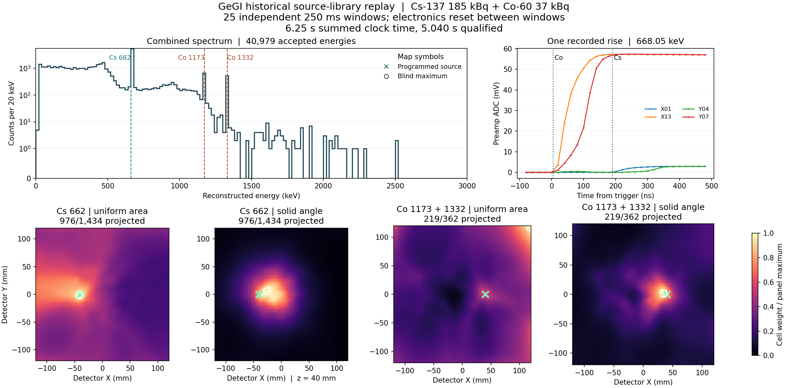

Historical shared-readout study
GeGI historical library replay: 25 independent 250 ms windows
Shared spectrum and conditional source-plane maps
25 independent 250 ms historical library replay windows, summed 6.25 s. Each window resets its source clocks and electronics state and reuses archived single-isotope histories. This is readout evidence; it does not implement the planned joint source generation and ≥60 s uninterrupted production acquisition.
The replay recorded 53,033 qualified triggers and 40,979 accepted energies in 5.03987132 s of qualified ADC time. The images compare where each isotope’s gamma-line cones point under two imaging priors.

Source direction and unresolved events
| Source window | Uniform area (default) | Uniform solid angle |
|---|---|---|
| Cs-137, 662 keV | (−42, −2) mm · 2.8 mm offset · 2.4° | (−26, 6) mm · 15.2 mm offset · 13.9° |
| Co-60, both windows | (118, 118) mm (edge) · 141.4 mm offset · 49.4° | (34, 2) mm · 6.3 mm offset · 5.1° |
Without using the programmed coordinates to locate the peaks, both priors project the same measured cones and interaction orders onto z = 40 mm. Direction errors are angles from the detector center. Of 5,035 two-strip triggers, 1,195 had no usable projection. Including the unprojected orders of other triggers, 1,195.5 trigger units remained unresolved.
Data and methods
Open acquisition counts, line-window results and source hashes (JSON).
The historical replay is under the retained data key commercial_acquisition.
Line-window counts and sampling intervals
| Energy window | Accepted energies | Projected / two-strip | Peak X, Y (mm) | Offset (mm) | Direction error | 95% resampled offset (mm) |
|---|---|---|---|---|---|---|
| 662 keV | 5,466 | 976/1,434 | (−42, −2) | 2.8 | 2.4° | 2.8–6.3 |
| 1,173 keV | 745 | 121/209 | (118, 118) | 141.4 | 49.4° | 119.1–197.2 |
| 1,332 keV | 537 | 98/153 | (118, −70) | 104.8 | 38.6° | 86.8–141.4 |
Intervals come from 2,000 whole-exposure resamples under this simulated setup.
Source placement, acquisition and event counts
Cs-137 was modeled at (−40, 0, 40) mm (185 kBq) and Co-60 at (40, 0, 40) mm (37 kBq), using nominal activities from the Spectrum Techniques RSS5 check-source set.
The total window clock is 6.25 s; qualified ADC time is 5.03987132 s. The windows used disjoint archived source libraries, sampled with replacement within each window. Independent source clocks scheduled occurrences of these archived histories. For each of 34 electrodes, the simulation summed signed analog preamplifier voltages, then added channel noise, digitized, and applied the trigger.
12,054 qualified triggers had no accepted energy. Of 5,035 two-strip triggers, 3,840 contributed 5,456 projected orders from 5,573 allowed orders. The timing comparison associated 51 qualified rises with deposits from both sources. It found simultaneous native current on measured strips in 20 qualified rises. The illustrated rise reconstructed to 668.05 keV, with Co-60 followed by Cs-137 in the simulated deposit history.
Related historical studies
These studies use earlier samples or controlled mixtures with separate denominators.